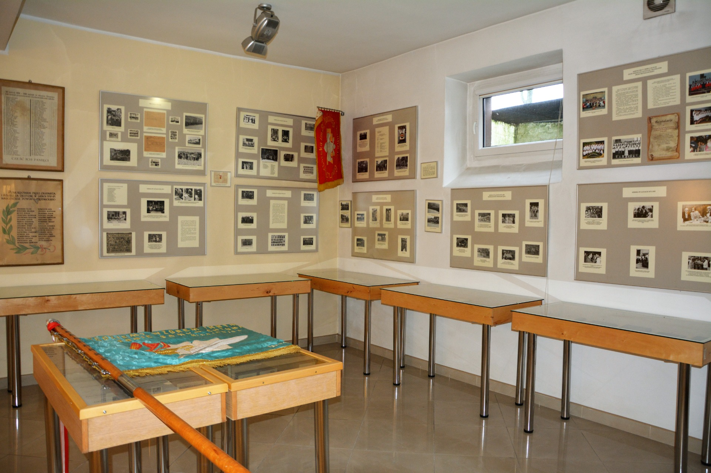

I Liceum Ogólnokształcące im. Filomatów Ziemi Michałowskiej w Brodnicy
O nas
Profile
Personel
Kontakt
Baza dydaktyczna
I LO posiada dla swoich uczniów bardzo bogatą ofertę dydaktyczną
Dołącz do naszej społeczności
Astrobaza Kopernik
ASTROBAZA to autorski projekt Samorządu Województwa Kujawsko-Pomorskiego. Powstał on w ramach Regionalnego Programu Operacyjnego Województwa Kujawsko-Pomorskiego. Zlokalizowanie obserwatoriów astronomicznych na terenie szkół biorących udział w projekcie ASTROBAZA nie oznacza, że piękno nocnego nieba mogą podziwiać tylko uczniowie wybranych szkół. Wręcz przeciwnie. Każda z ASTROBAZ stanowi lokalne centrum popularyzacji astronomii i jest dostępna dla wszystkich zainteresowanych. Obserwowanie obiektów astronomicznych za pomocą zaawansowanego technicznie sprzętu obserwacyjnego pozwala rozbudzać astronomiczne zainteresowania nie tylko wśród młodzieży szkolnej, ale również wśród lokalnej społeczności. Kontakt z astronomią to nie tylko podziwianie różnorodności i piękna obiektów astronomicznych, ale przede wszystkim wspaniała przygoda intelektualna. Obserwując obiekty bliskiego i odległego kosmosu zaczynamy zadawać sobie pytania, na które szukamy odpowiedzi często odnosząc się do wiedzy z zakresu nauk matematyczno-przyrodniczych. Stąd już tylko mały krok do zainteresowania młodzieży trudnymi i mało popularnymi naukami ścisłymi. Astronomia jest szczególną nauką, ponieważ łączy w sobie wiele treści z innych nauk przyrodniczych, głównie fizyki, ale również z geografii i chemii. Warto podkreślić, że do prawidłowego opisu zjawisk astronomicznych wymagana jest również znajomość matematyki. Dlatego zainteresowanie uczniów astronomią pomaga w zwiększeniu zainteresowania młodzieży szkolnej naukami matematyczno-przyrodniczymi.
Hala sportowa
We wrześniu 2012 roku w I LO w Brodnicy uroczyście oddano do użytku pełnowymiarową halę sportową, salę fitness i siłownię wraz z zapleczem sanitarno - magazynowym. Oprócz lekcji wychowania fizycznego na hali odbywają się zajęcia dodatkowe dla uczniów takie jak: piłka siatkowa, koszykówka dziewcząt i chłopców, piłka nożna halowa, zajęcia z tańca oraz ćwiczenia na siłowni.
Od połowy lutego 2013 roku z naszych obiektów mogą korzystać także kluby sportowe i grupy prywatne.
Internat oraz Biblioteka
Internat jest położony zaraz przy szkole, więc już nie spóźnisz się na lekcje. W internacie nawiążesz nowe znajomości i przyjaźnie. Wyrwiesz się z małej miejscowości i się usamodzielnisz. Internackie jedzenie jest bardzo dobre i urozmaicone. Wiele osób oferuje pomoc w nauce.
Biblioteka mieści się w budynku internatu I Liceum Ogólnokształcącego. Zajmuje trzy pomieszczenia o powierzchni 104,10 m2.
W pierwszej sali znajduje się wypożyczalnia, w drugiej czytelnia na 32 miejsca i cztery stanowiska komputerowe z dostępem do Internetu. Trzecia sala pełni funkcję zaplecza do prac techniczno-introligatorskich i podręcznego magazynu książek. Biblioteka posiada również dodatkowe pomieszczenie magazynowe. Od marca 2005 r. udostępnianie zbiorów odbywa się komputerowo. Od stycznia 2007 r. rozpoczęto wprowadzanie opisów bibliograficznych do kartoteki zagadnieniowej. Obecnie zbiory są udostępniane w programie Mol Net+.
Izba Tradycji
Izba Tradycji to miejsce, w którym poznasz historię naszej szkoły oraz zaznajomisz się z jej wszystkimi tajemnicami. Nasza szkoła ma swoje tradycje, które na pewno przypadną Ci do gustu. Nauka w szkole, z wiedzą o jej przeszłości jest o wiele ciekawsza. W tym roku nasza szkoła kończy 150lat. Więcej o Izbie tradycji dowiesz się z filmiku na dole.
